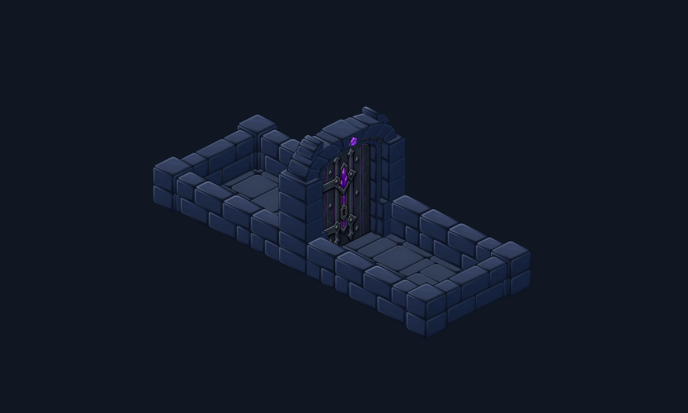
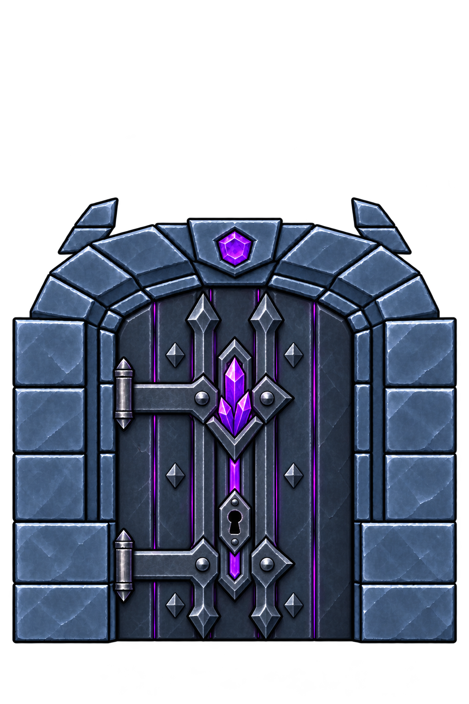

Fer noirci, pierre et cristaux
Un battant en plaques de métal sombre, deux traverses reliées aux gonds, et des cristaux violets enchâssés dans le sceau central. La pierre et les raccords conservent les formes du donjon.

Approuvée et intégrée au kit partagé du jeu le 1er novembre 2026. Captures natives Godot ; géométrie, position de serrure et raccords identiques au modèle validé. Ouverture, badges, crochetage et traversée du Vulpin vérifiés. Mémoire des textures inchangée ; test sur téléphone physique non effectué.
Texture source ImageGen

Consigne ImageGen · Vérification de conservation · Rapport d’intégration · Sources et reproduction